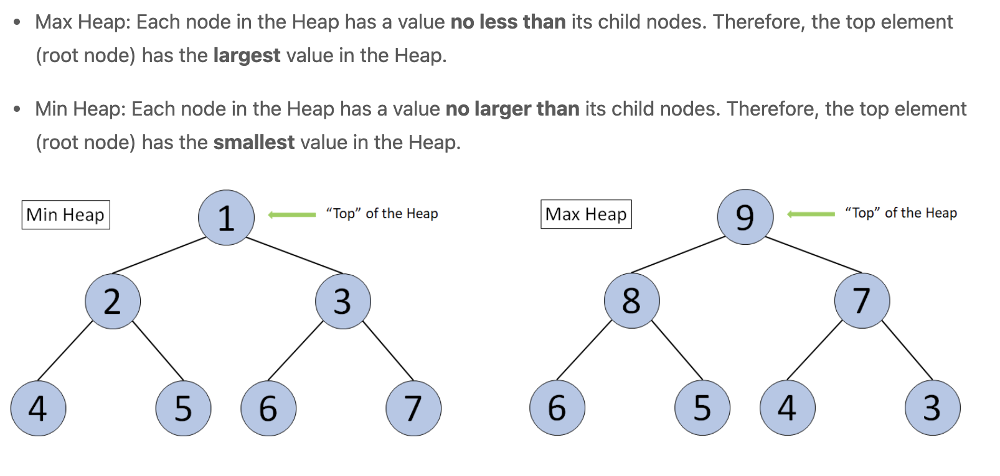

Angorithm4 Webinar #5
Host by Jiawei Wang 2021-11-19
1. Review Interpreter vs. Compiler
i. Interpreter == Virtual Machine

- There is no "Interpreted language" or "Compiled language"
- Just layer-by-layer interpret (running in the Virtual machine)
- Interpret means just update the state of this machine (Turing Machine)
- Finally interprete at the real-machine --> CPU
ii. Static Time


iii. Runtime
-
1. Stack-based VM
# stack contents (leftmost = top = most recent):
push A # A
push B # B A
push C # C B A
subtract # B-C A
multiply # A*(B-C)
push D # D A*(B-C)
push E # E D A*(B-C)
add # D+E A*(B-C)
add # A*(B-C)+(D+E)
public class JavaBytecode {
public static void main(String[] args) {
int x = 15;
System.out.println(x + 10 - 5);
}
};
Compiled from "JavaBytecode.java"
public class JavaBytecode {
public JavaBytecode();
Code:
0: aload_0
1: invokespecial #1 // Method java/lang/Object."<init>":()V
4: return
public static void main(java.lang.String[]);
Code:
0: bipush 15
2: istore_1
3: getstatic #7 // Field java/lang/System.out:Ljava/io/PrintStream;
6: iload_1
7: bipush 10
9: iadd
10: iconst_5
11: isub
12: invokevirtual #13 // Method java/io/PrintStream.println:(I)V
15: return
}
-
2. Register-based VM (Real-CPU)
#include <stdio.h>
int main() {
int x = 15;
printf("%i", x);
}
.section __TEXT,__text,regular,pure_instructions
.build_version macos, 11, 0 sdk_version 12, 0
.globl _main ## -- Begin function main
.p2align 4, 0x90
_main: ## @main
.cfi_startproc
## %bb.0:
pushq %rbp
.cfi_def_cfa_offset 16
.cfi_offset %rbp, -16
movq %rsp, %rbp
.cfi_def_cfa_register %rbp
subq $16, %rsp
movl $15, -4(%rbp)
movl -4(%rbp), %esi
leaq L_.str(%rip), %rdi
movb $0, %al
callq _printf
xorl %eax, %eax
addq $16, %rsp
popq %rbp
retq
.cfi_endproc
## -- End function
.section __TEXT,__cstring,cstring_literals
L_.str: ## @.str
.asciz "%i"
.subsections_via_symbols
The Deeper, the faster!
2. Comparision Sort(III) - Heap Sort
i. Heap
- Heap is a special "Piority Queue"
- Heap is a Complete Binary Tree
- The value of each node must be no greater than (or no less than) the value of its child nodes.

void MaxHeaptify(vector<int>& A, int root, int length) {
// complete binary tree
int left = 2*root;
int right = 2*root + 1;
int largest;
if (left <= length && A[left] > A[root]) {
largest = left;
} else {
largest = root;
}
if (right <= length && A[right] > A[largest]) {
largest = right;
}
if (largest != root) {
// we need to update the subtree
swap(A[root], A[largest]);
MaxHeaptify(A, largest, length);
}
}
void BuildMaxHeap(vector<int>& A) {
// from the last parent node to root
for (int i = (int)A.size()/2; i >= 1; i--) {
MaxHeaptify(A, i, (int)A.size()-1);
}
}

ii. Heap Sort
void HeapSort(vector<int>& A) {
A.insert(A.begin(), 0);
BuildMaxHeap(A);
int size = (int)A.size() - 1;
for (int i = (int)A.size()-1; i >= 2; i--) {
swap(A[1], A[i]);
size--; // key
MaxHeaptify(A, 1, size);
}
A.erase(A.begin());
}

iii. Time Complexity Analysis
-
Worse-case analysis:
BuildMaxHeap()-- O(N)MaxHeaptify()-- O(logN) (h)HeapSort()-- O(NlogN)
iv. Application (Example)
class Solution {
public int findKthLargest(int[] nums, int k) {
// init heap 'the smallest element first'
PriorityQueue<Integer> heap =
new PriorityQueue<Integer>((n1, n2) -> n1 - n2);
// keep k largest elements in the heap
for (int n: nums) {
heap.add(n);
if (heap.size() > k)
heap.poll();
}
// output
return heap.poll();
}
}
3. Lower Bounds of Comparision Sort
1. Is O(NlogN) the best we can do?
N! <= 2^h ->h >= log(N!) >= log(N/e)^N = Nlog(N/e) = NlogN - Nloge
= O(NlogN)